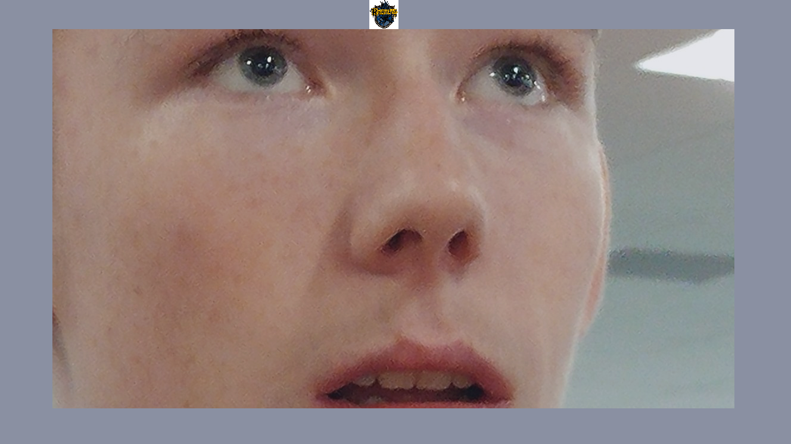

Click the photo below to view my remixed game.
Use the Arrow Keys to move around.
The goal is to get to the green goal.
Don't touch the walls of you'll go back to the start of the level.
Get the coin to unlock the gate.
Play with the sound on.
Type the answers to progress
Spelling matters, capitalization does not
Disregard any titles on names (Mr., Ms., Mrs., Dr., etc.)
When talking about numbers, don't write out the word (Use 1 instead of one)
Get the highest score possible and try to make it to the end
You win when you make it to the rocket with a high score
Press the green flag to restart


Click the App icon or scan the QR Code to download the app.
Click on the social media icons to score as many points as possible in 30 seconds.
The app will reset your score and timer after 30 seconds and immediately start you tapping again.
Shake your device at any time to manually reset the timer and your score, if you feel like you can do better.
Track your high score and aim for new ones!
You can download the code Here
This story is one where you choose the outcome.
Go through the story and answer the questions exactly as you see the answer choices.
Each photo here is linked with the code that added the filter to it.
Each photo had a boarder and a crest added onto it using a Python code.
Here is the first set of photos done with the original code meant to include the photos into Ⓡommunism.
Here is the second set of photos done on a revised code to add the photos to the Ravenclaw house from the Harry Potter franchise.
